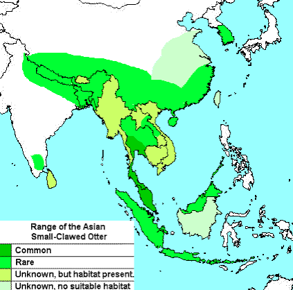

| Asian Small-Clawed River Otter | |
|---|---|
| Kingdom: | Animalia |
| Phylum: | Chordata |
| Class: | Mammalia |
| Order: | Carnivora |

| OverView |
|---|
Asian small-clawed otters are closely related to whesles, skunks and ferrits; all in the carnivore family "Mustelidae."
Otters in this genus are characterized by only partial webbing between their toes, and small claws which do not extend past the padding while other otters have fully webbed feet and strong, well-developed claws.
Asian small-clawed otters have slender, serpentine bodies with dense fur.
The Asian small-clawed otter are countershaded, compared to other otters, and have dark brown fur above and lighter fur below.
They may also have gray or white markings along their face and throat.
| Diet and Weight |
|---|
The Asian small-clawed otter feeds on crustaceans and mollusks and will also eat fish, insects, frogs and even small reptiles.
They forage with their touch-sensative paws, which enable them to locate prey in silt riverbeds.
The weight of an adult Asian small-clawed otter ranges from 6 to 12lb with a body length of 16 to 24in and a tail length of 10 to 16 in.

| Behaveral Habits |
|---|
Asian small-clawed otters are social animals, living in family groups of up to 12 individuals.
They are diurnal, meaning they are active during the day and rest at night.
They are also known for their playful behavior, often engaging in activities such as sliding down mud or snow banks, wrestling with each other, and playing with objects such as sticks or rocks.
| Conservation Status |
|---|